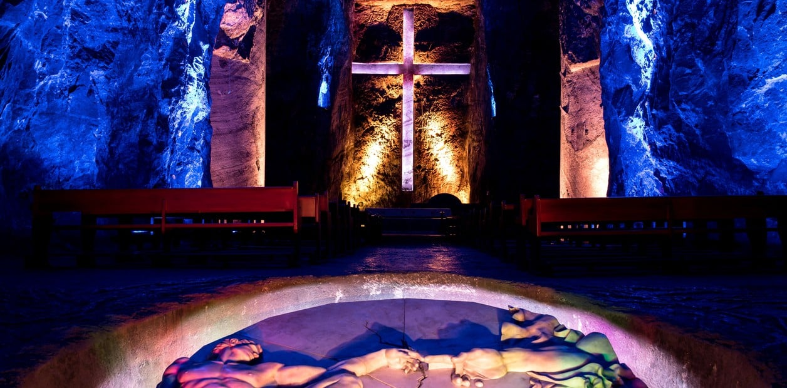
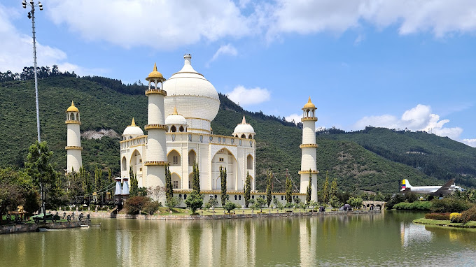
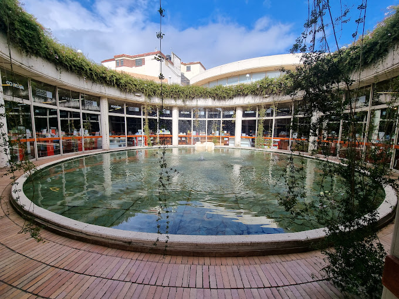
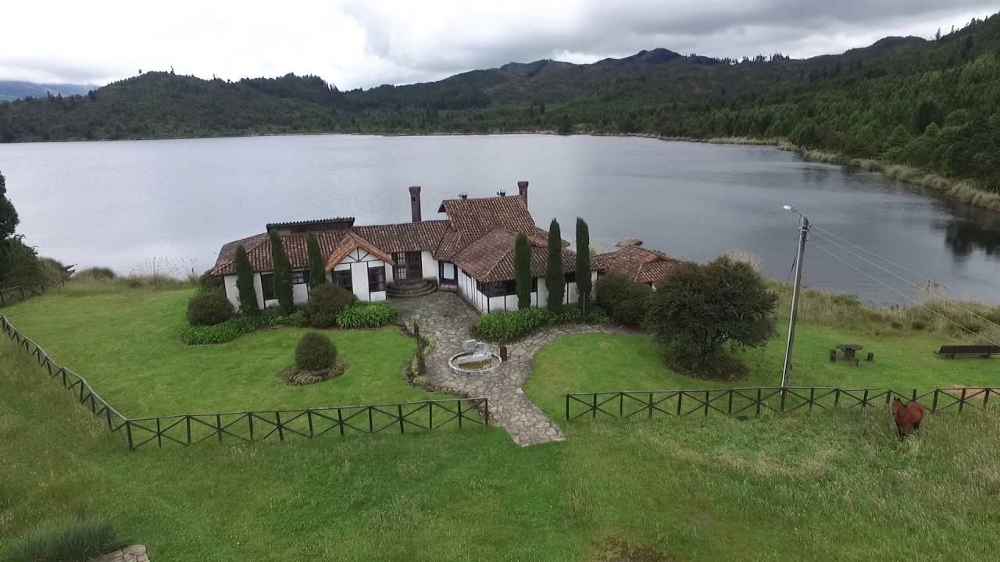

La catedral de la Sal de Zipaquirá es considerada como uno de los logros arquitectónicos y artísticos más notables de la arquitectura colombiana, por lo que se le ha otorgado incluso el título de joya arquitectónica de la modernidad. La importancia de la Catedral, radica en su valor como patrimonio cultural, religioso y ambiental.
En su interior se encuentra una rica colección artística, especialmente de esculturas de sal y mármol en un ambiente lleno de un profundo sentido religioso que atrae a turistas.
En 2007 mediante un concurso para elegir las 7 Maravillas de Colombia; la Catedral de Sal obtuvo la mayor votación; convirtiéndola en la Maravilla No.1 de Colombia, aunque también fue propuesta entre las Nuevas siete maravillas del mundo moderno.
La iglesia subterránea hace parte del complejo cultural "Parque de la Sal", espacio cultural temático dedicado a la minería, la geología y los recursos naturales.
¿COMO LLEGAR?
La Catedral de Sal se encuentra en la Ciudad de Zipaquirá, población del Departamento de Cundinamarca, a 29 kilómetros al norte del Distrito Capital de Bogotá y a una altitud de 2.680 msnm. Por vía férrea la Catedral dista de la ciudad de Bogotá unos 48 kilómetros, el recorrido es realizado por el Tren de la Sabana.
En Zipaquirá, los veranos son frescos; los inviernos son cortos, fríos y mojados y está nublado durante todo el año. Durante el transcurso del año, la temperatura generalmente varía de 6 °C a 18 °C y rara vez baja a menos de 2 °C o sube a más de 20 °C.
¿QUE HACER?
La Catedral de Sal
Es el mayor atractivo de Zipaquirá, reconocida mundialmente y desde luego, visitada por personas de todas partes del planeta, sin importar sus creencias religiosas y costumbres; incluso ha sido visitada por presidentes de varios países. Vivir una experiencia única a 180 metros bajo tierra es indescriptible.
La Catedral de Sal es un sitio para apreciar como una de las obras de ingeniería más importantes del país es, además, un centro religioso y uno de los santuarios católicos más célebres del país, que hace memoria del Viacrucis de Jesucristo. En su interior se encuentra una rica colección artística, especialmente de esculturas de sal y mármol en un ambiente lleno de un profundo sentido religioso que atrae a peregrinos y turistas.
Fundación Parque Jaime Duque
Somos una entidad sin ánimo de lucro 100% colombiana que trabaja por la conservación de la unión familiar, la naturaleza, la vida de la población más vulnerable y la memoria histórica, a través de procesos de educación, recreación y alianzas con otras entidades.
Centro cultural Gabriel García Márquez
Zipaquirá, un lugar que colaboró, estructuró e inspiró a este importante escritor. A sus 16 años el Premio Nóbel de Literatura, Gabriel García Márquez ingresó al Colegio de Varones de Zipaquirá, donde cursó sus últimos cuatro años de bachillerato.
Pantano Redondo
Localizado en el kilómetro 4 de la vía que lleva al municipio de Pacho, una reserva de agua que surte a las Salinas. Lo alimentan fuentes hídricas y quebradas que proceden del páramo. Es considerado como uno de los parques hídricos naturales más ricos del país pues también la fauna, la flora y la vegetación son exuberantes, cualidades que hacen del sector un exótico sitio de descanso y admiración ecológica.
___________________________________________________________________
¿DONDE ALOJARSE?
Hotel Boutique
Hotel Boutique
Catedral de Sal de Zipaquirá 50 Metros Arriba De La Entrada De La Mina., Zipaquirá 250257 Colombia
Tel: +57 301 7531929
★ ★ ★ ★
Reserva YA
Hotel Camino de la Sal
Hotel Camino de la Sal
Carrera 4 Nº 5 - 03 Zipaquirá, ColombiaCarrera 4 Nº 5 - 03 Zipaquirá, Colombia
Tel: +57 301 370 2227
★ ★ ★
Reserva YA
Hotel Cacique Real
Hotel Cacique Real
Cra. 6 #2-36, Zipaquirá, Cundinamarca, Colombia
Tel: +57 18510209
★ ★ ★
Reserva YA
___________________________________________________________________
¿DONDE COMER?
La Komilona de Andrés
La Komilona de Andrés
Cra. 6 #3 - 48, Zipaquirá, Cundinamarca, Colombia
Tel: +576 01851 6554
★ ★ ★ ★ ★
+Info
Zenatrium Café Gourmet
Zenatrium Café Gourmet
Cl. 3 #N° 9 - 10, Zipaquirá, Cundinamarca, Colombia
Tel: +57 300 8665455
★ ★ ★ ★ ★
+Info